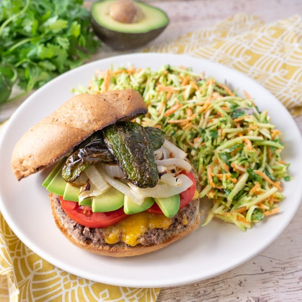

Black Bean Sandwich (Torta) with Blistered Jalapeños & Broccoli Slaw

Prep Time
35 min
Nutrition (per serving)
695.9 kcalCalories
30.2 gProtein
74.9 gCarbs
33.7 gFat
Full nutrition table
| Calories | 695.9 kcal |
| Total fat | 33.7 g |
| Saturated fat | 9.3 g |
| Trans fat | 0.8 g |
| Cholesterol | 38.8 mg |
| Sodium | 981.8 mg |
| Carbohydrates | 74.9 g |
| Fiber | 24.9 g |
| Sugars | 14.4 g |
| Protein | 30.2 g |
| Potassium | 1617.1 mg |
| Calcium | 438.3 mg |
| Iron | 6.2 mg |
| Vitamin A | 1235.2 IU |
| Vitamin C | 123.4 mg |
| Vitamin D | 8.7 IU |
Cookware
Ingredients
- 1avocado
- 2 (15 oz) cansblack beans
- 1 (12 oz) pkgbroccoli slaw
- 2 mediumcarrots
- ½ (8 oz) blockcheddar cheese
- 1 small bunchcilantro
- 4jalapeño peppers
- 1lime
- ¼ cupplain Greek yogurt
- 2tomatoes
- 4whole grain buns or rolls
- 1 mediumyellow onion
- black pepper
- chili powder
- coriander, ground
- cumin, ground
- extra virgin olive oil
- garlic powder
- mayonnaise
- pure maple syrup
- salt
Steps
- Preheat oven to broil on high and position rack under the broiler.
- Wash and dry the fresh produce.4 jalapeño peppers
1 lime
2 medium carrots
1 small bunch cilantro
2 tomatoes
1 avocado - Peel, halve, and thinly slice onion. Transfer to a large baking sheet pan.1 medium yellow onion
- Halve jalapeño peppers lengthwise; seed and remove ribs with a spoon. Add to the baking sheet with the onions. (Be careful, with jalapeños, do not touch your eyes and ensure you wash your hands after handling or wear gloves while preparing.)
- Drizzle onions and jalapeños with oil and season with salt; toss to coat. Place in the oven and broil, tossing once, until veggies are soft and blistered, about 10 minutes. Remove from oven and set aside. (Keep the broiler on.)2 tsp extra virgin olive oil
¼ tsp salt - Meanwhile, juice lime into a medium bowl. Add yogurt, mayo, maple syrup, salt, and pepper; whisk to combine the dressing.¼ cup plain Greek yogurt
¼ cup mayonnaise
2 tsp pure maple syrup
¼ tsp salt
¼ tsp black pepper - Peel and grate carrots. Add carrots and broccoli slaw to the bowl with the dressing.1 (12 oz) pkg broccoli slaw
- Shave cilantro leaves off the stems; discard stems and mince the leaves. Add to the bowl and toss to combine the slaw; set aside.
- Drain and rinse beans; transfer to another medium bowl.2 (15 oz) cans black beans
- Add spices to the bowl with the beans. Crush with a fork or potato masher until almost smooth, with some texture remaining; set aside.½ tsp chili powder
½ tsp cumin
½ tsp coriander
½ tsp garlic powder
½ tsp salt - Grate cheese.½ (8 oz) block cheddar cheese
- Remove broiled veggies to a plate. Split rolls in half and place, cut-side up, on the baking sheet. Spread bean mash over the bottom halves of the rolls and top with cheese. Place in the oven and broil until buns are lightly toasted, and cheese is melted, 1-2 minutes. Remove from oven.4 whole grain buns or rolls
- Meanwhile, thinly slice tomatoes. Halve and pit the avocado; slice thinly while still in the skin, then scoop out.
- Place the bottom of each roll on a plate. Top with tomato, avocado, onions, and jalapeños; close sandwich with top half of the roll. Serve with broccoli slaw on the side and enjoy!